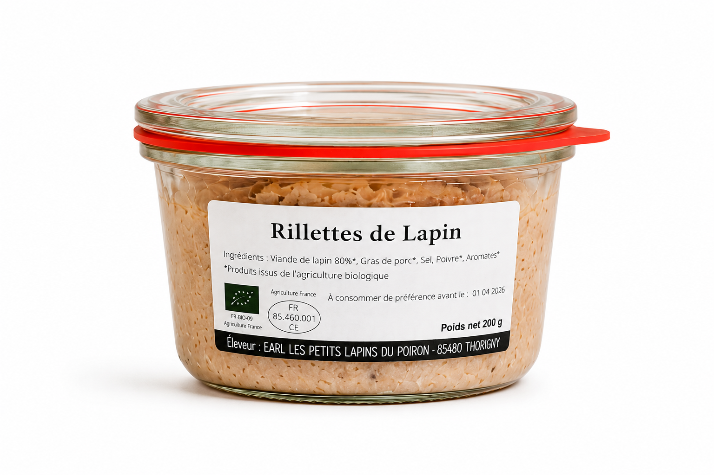
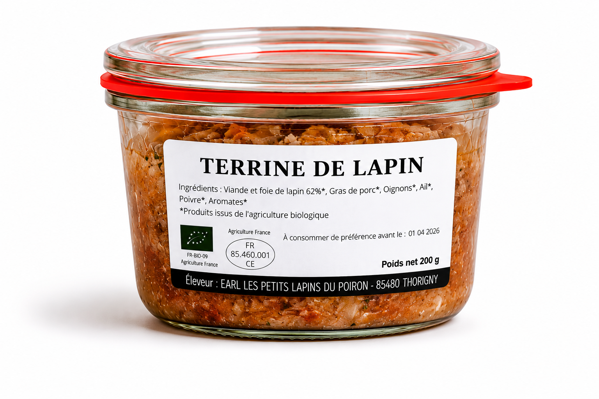
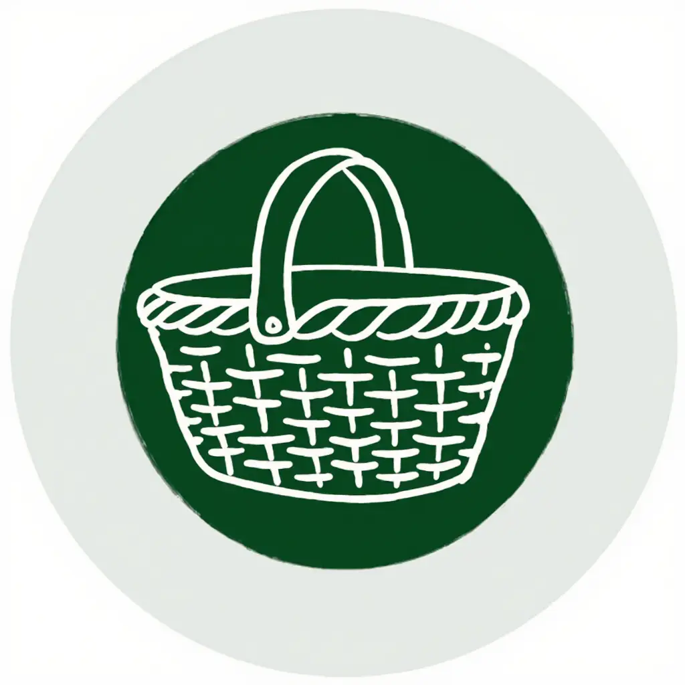
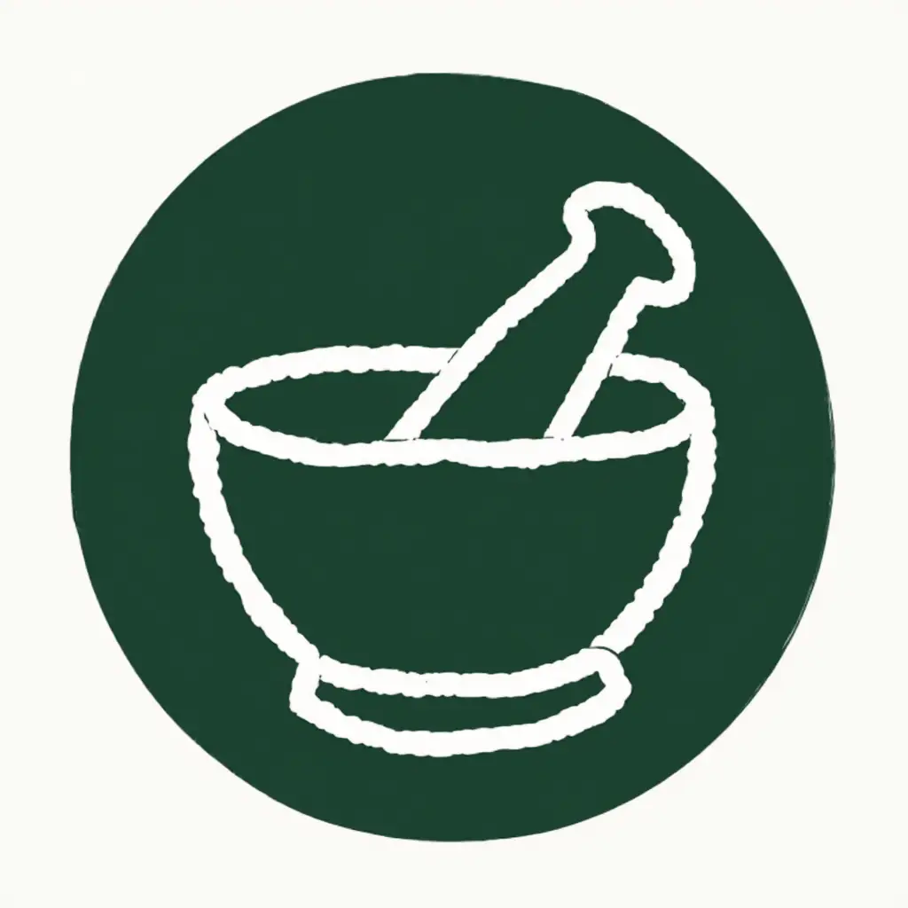
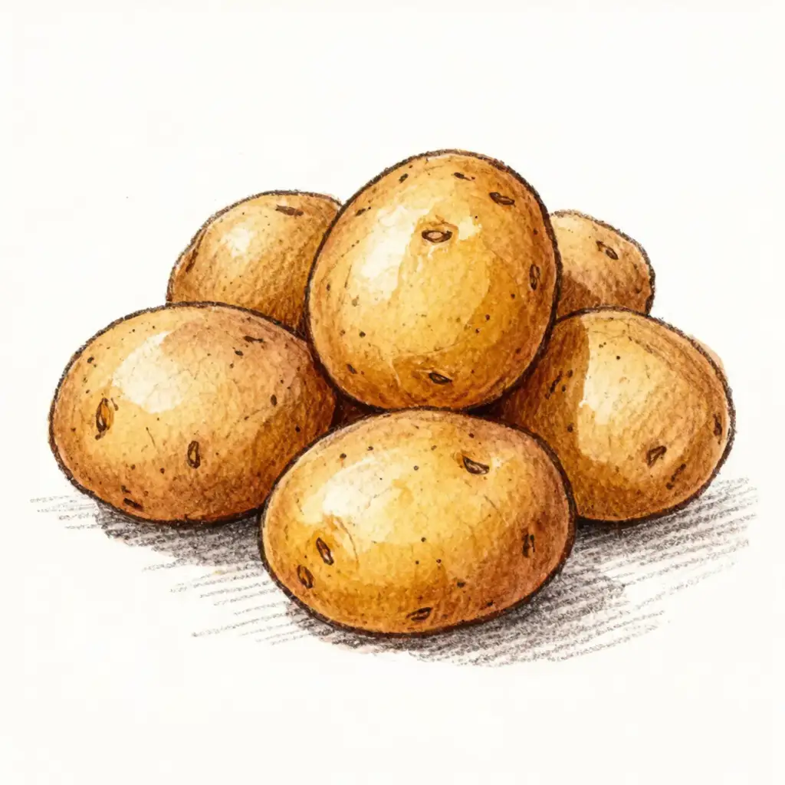
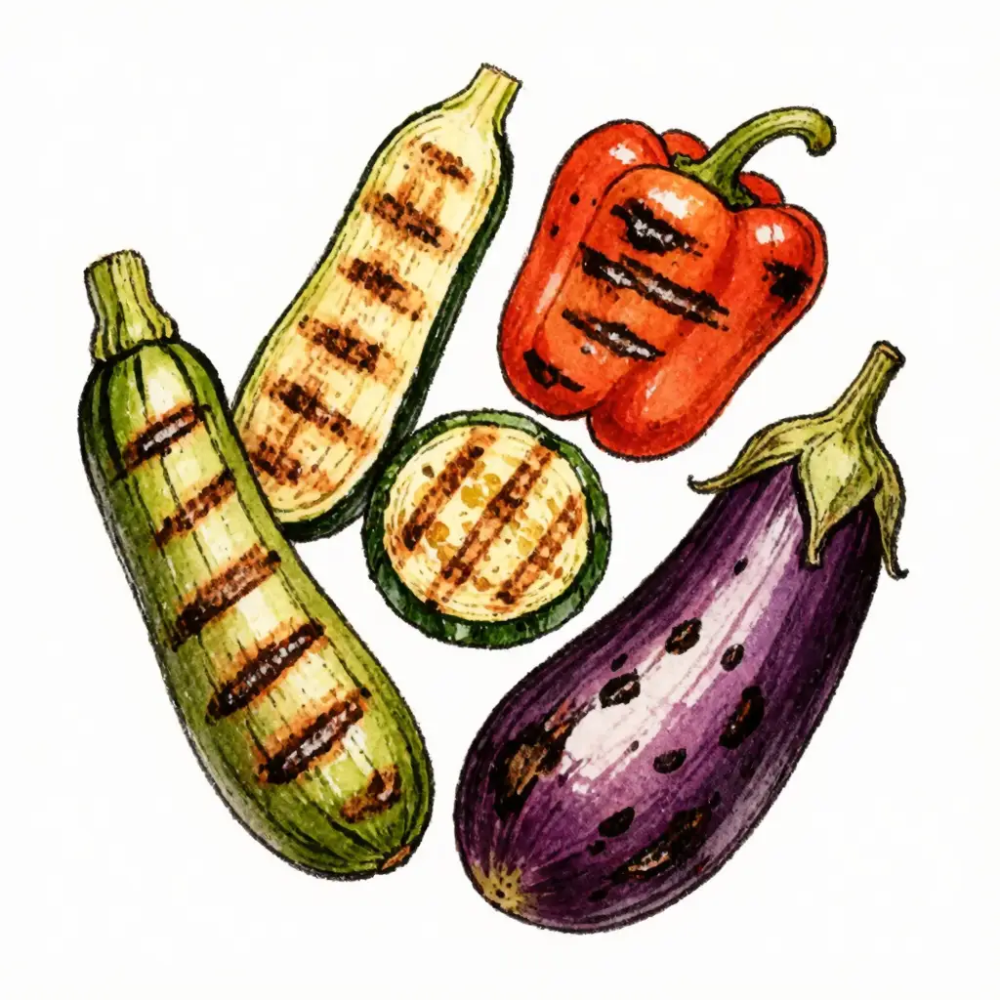
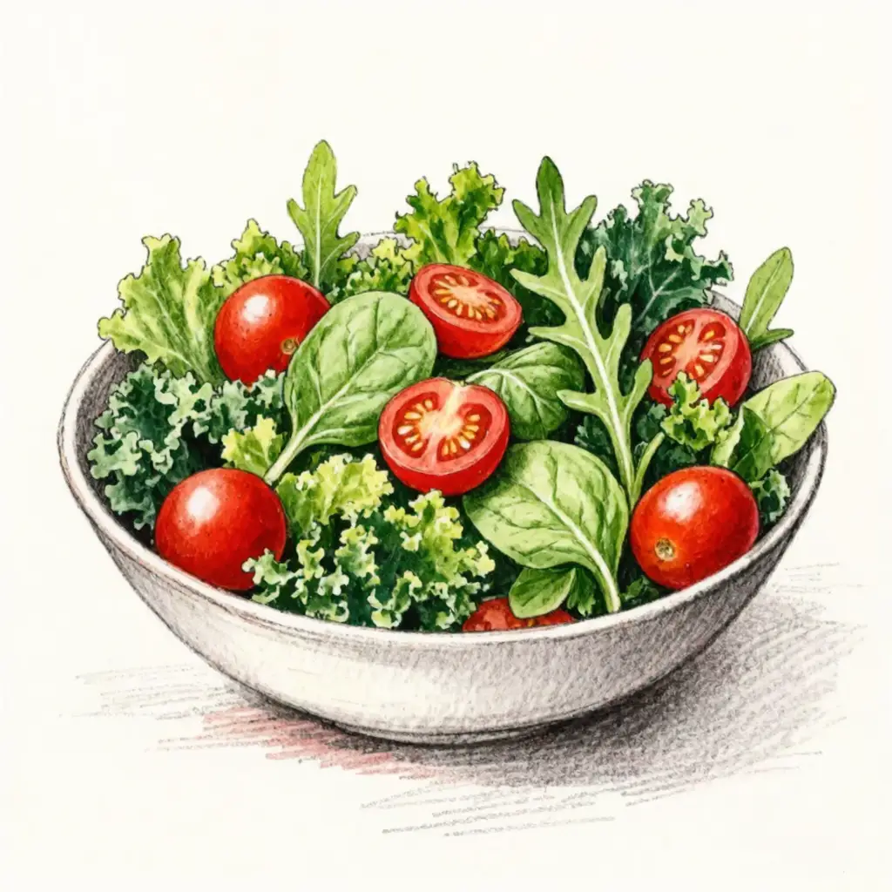
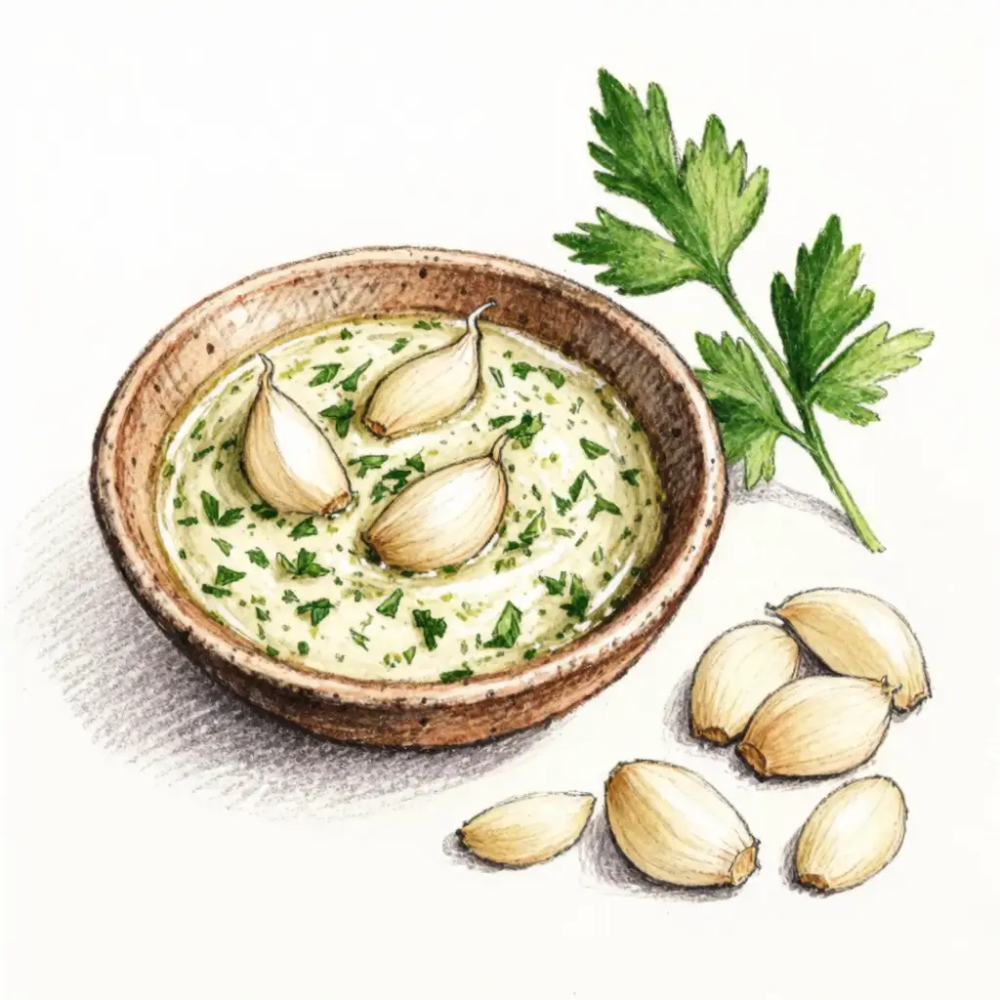

Lapin entier
18,00 € / pièce
Nos lapins sont élevés avec soin, dans le respect de leur bien-être et de la nature.
Découvrir nos produitsBien-être animal
et conditions naturelles
Au cœur de la Vendée,
circuits courts
Nourriture naturelle
sans OGM



2 façons savoureuses de cuisiner

Ingrédients
PréparationCuisson douce et régulière pour un lapin tendre et juteux, bien doré à l'extérieur.

Pommes de terre grenaille
Légumes grillés
Salade estivale
Sauce ail et fines herbesAjouter quelques branches de thym frais sur la plancha pendant la cuisson pour parfumer davantage la viande.
Deux cuissons, un même plaisir · Savoureux, parfumé et convivial

Installés au Petit Poiron, à Thorigny en Vendée, nous sommes une EARL spécialisée dans l'élevage biologique du lapin depuis 2020. Nos lapins évoluent sur parcours herbeux, en plein air, sans intrants chimiques.
En savoir plus sur notre histoire